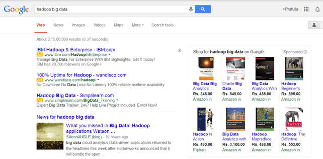

Types of BIG DATA
Following are the types of Big Data:
- Structured
- Ustructured
- Semi-Structured
Structured
Any data that can be stored, accessed and processed in the form of fixed format is termed
as a 'structured' data. Over the period of time, talent in computer science has achieved
greater success in developing techniques for working with such kind of data
and also deriving value out of it. However, nowadays, we are foreseeing issues
when a size of such data grows to a huge extent, typical sizes are being in the
rage of multiple zettabytes.
Do you know? 1021 bytes equal to 1 zettabyte
An "Employee" table in a database in an example of Strucured Data.
| Employee Name |
Gender |
Department |
| Ahmed Hasan |
Male |
Finance |
| Hoda Moahmed |
Femal |
Admin |
| Khaled Sayed |
Male |
Admin |
| Madgy Fekry |
Male |
Finance |
| Hanan Farag |
Female |
Finance |
Ustructured
Any data with unknown form or structure is classified as unstructured data.
In addition to the size being huge, unstructured data poses multiple challenges
in terms of its processing for deriving value out of it. A typical example of
unstructured data is a heterogeneous data source containing a combination of simple
text files, images, videos etc. Nowadays, organizations have wealth of data available
with them but unfortunately, they don't know how to derive value out of it since this
data is in its raw form or unstructured format.
The output returned by "Google Search" is an example of Unstrucutred Data.

Semi-Structured
Semi-structured data can contain both the forms of data. We can see semi-structured
data as a structured in form but it is actually not defined with e.g. a table definition
in relational DBMS. Example of semi-structured data is a data represented in an XML file.
Personal data stored in an XML file is an example of Semi-Strucutred Data.
Prashant RaoMale35
Seema R.Female41
Satish ManeMale29
Subrato RoyMale26
Jeremiah J.Male35
Links: